anovaで鶏ハム
anovaで鶏ハム
前の記事でも書いたけど、諸事情で高タンパク質な食生活を目指す必要があるので鶏胸肉で何か作りたかった。ということで鶏ハムを作る事にした。
前回はこちら
今回の参考レシピはこちら
鶏むね肉をしっとり仕上げるには、低温でじっくり調理するのが一番！そんなパサつきゼロのしっとり美味しい鶏ハムのレシピです。しかし、鶏肉の低温調理は食中毒菌も気になるところ。今回は気になる食中毒菌のお話も含めて、安全で美味しい鶏ハムの作り方…limia.jp
こんな手間がかかるのに鶏肉一枚や二枚とか料理する気にならないので…
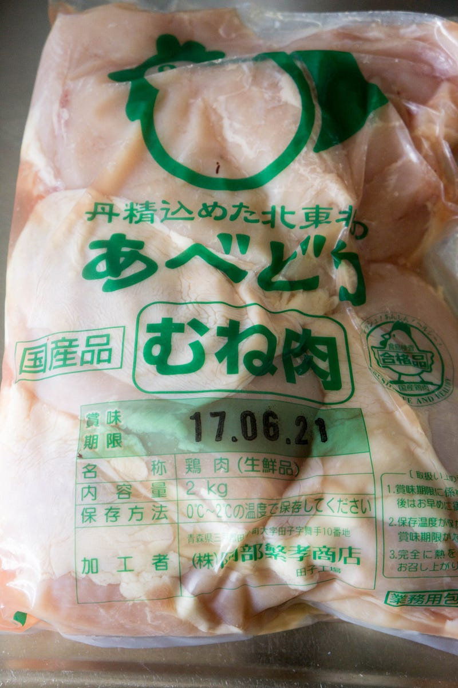
肉です。
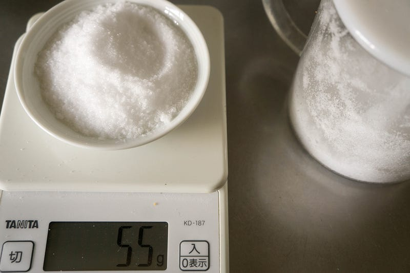
今回は味は2種類つくる。まず1.1kg分をプレーンにするので、その重さに対する5%の塩。盛り塩だね。
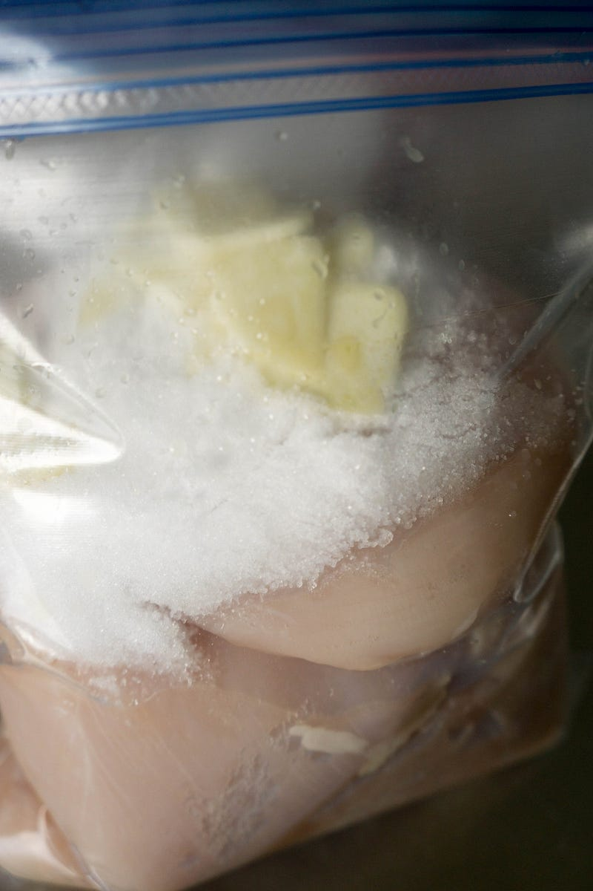
これ全部食べたら死ぬよね。もちろんこの後ちゃんと全体にまぶしました。
味付けは塩の他はニンニクを入れたのと、密封を助けるために少しオリーブオイル入れました。
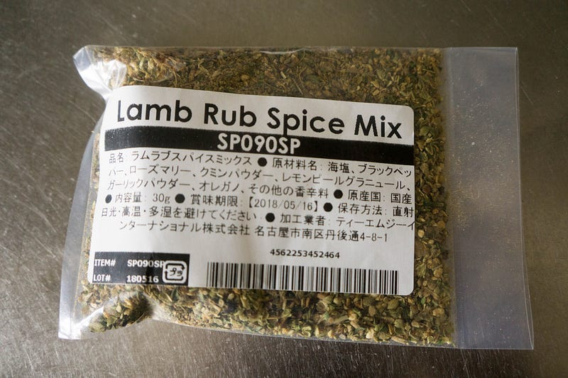
もう一個はこの間のBBQでMeat Guyから大量にラムラックを買った際、たくさん送られてきたスパイスミックスで味付け。このスパイスミックス、うまいとは思うんだけど、ラム肉のラムくささを味わいたい派には使うアテがないのだ…
BBQの様子はこちら
世間的にはもう少しで梅雨です。予報によれば今週中には入る模様です。 http://www.tenki.jp/forecaster/diary/m_hiraide/2017/06/03/72801.html ということで、滑り込…uzulla.hateblo.jp
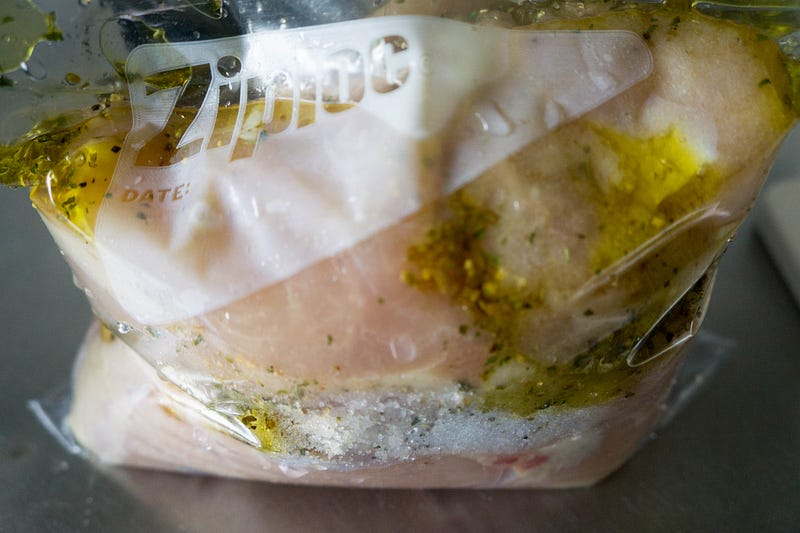
はい、これもあとでよく揉み込んでまぜました。
これで1日冷蔵庫へGo
1日たったら塩抜き。
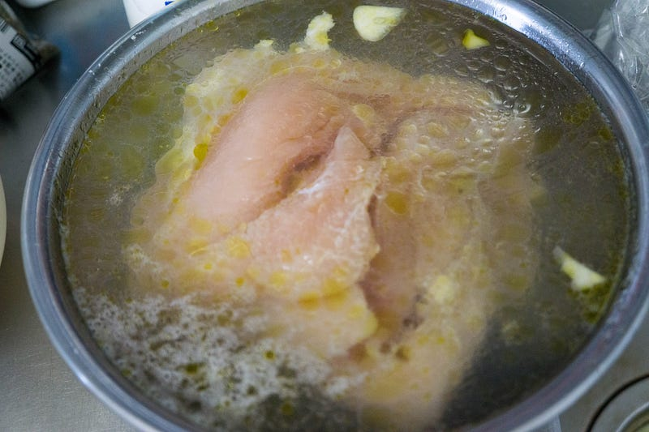
これが今回の失敗ポイントです。もっとはるかにたっぷりの水でもう少し真面目に塩抜きするべきだった。結果からいうとしょっぱすぎた。最初につける塩の量はあれでもいいと思うんだけど、もう少し真面目に塩抜きせんといかん…
多分もう少し水が必要だったのと、もっと真面目に位置を変えたりかきまぜたりするべきだった…
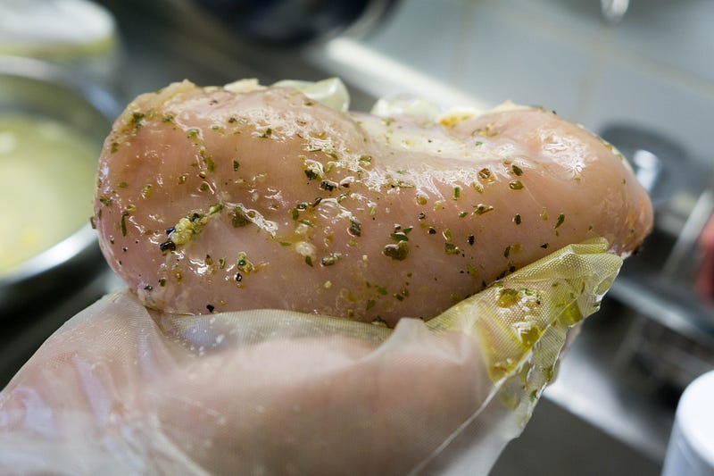
はい、塩抜きしたつもりの肉。
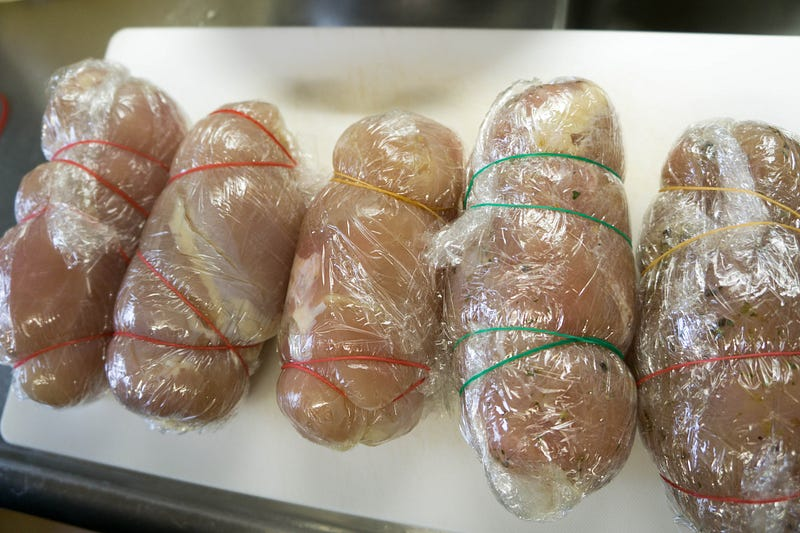
なんかうまくまけなかったので輪ゴムの力をかりた。ジップロックにいれて、水圧で密封もどきにして、これをAnovaで60℃、2時間。
※ WiFi タイプになります。900W スマホと連動してお鍋の水温をコントロール。どこからでも調理 ポンプ速度：毎分7〜8リットル、360度回転のポンプ アプリで操作可能 設定温度に達したらスマホにお知らせ アプリはAppストアUSな…amzn.to
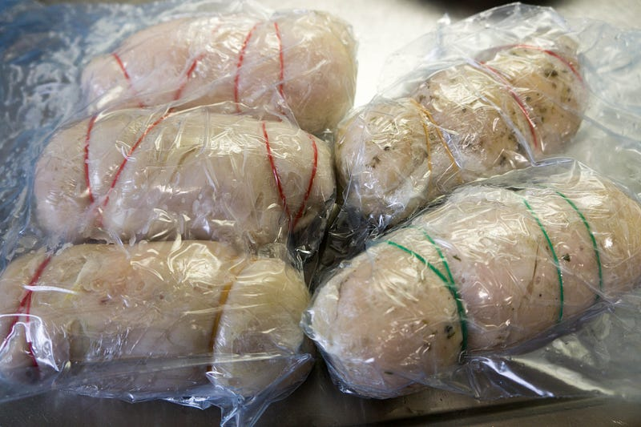
はい、2時間。
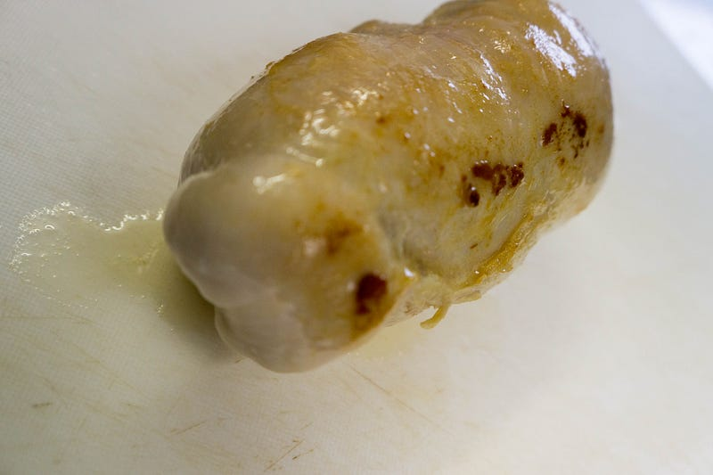
元のレシピではそのまま食べる感じだったけど、念のため油でまわりに火を通した。
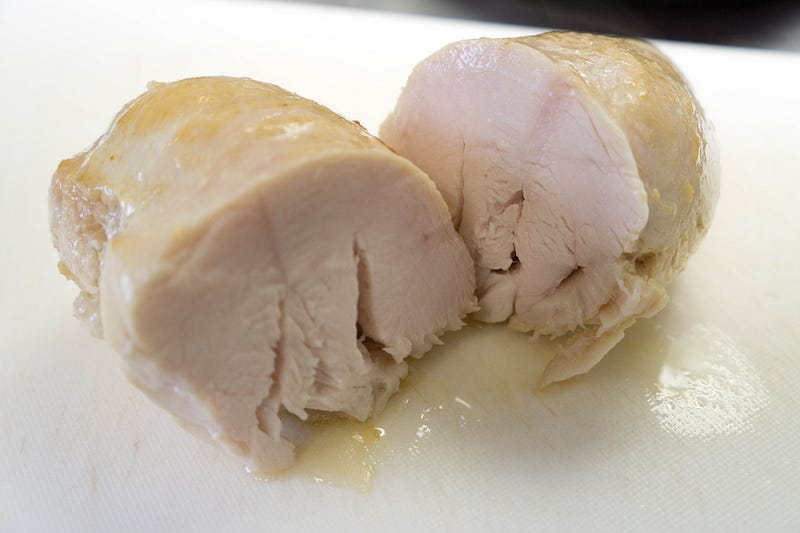
おお、ええやんかーーー！
って思ったけど、しょっぱかったね。部位によってしょっぱかったりちょうどよかったり、塩加減が微妙であった。まぁ、しかし食えないことはない。
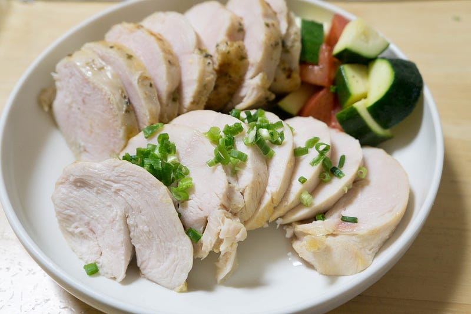
で、これにズッキーニとトマトのマリネ、あと写真はないけどポトフと一緒に食べました。ジューシーで柔らかく、ラムのスパイスもいい味だしてた。柔らかさもほぐれるやわらかさ、じゃなくて、ブリッブリだけど充分にほぐれる、という素晴らしいできであった。
マリネは適当な大きさに切ったトマトとズッキーニをレモン汁、お酢、塩少々、オリーブオイル、胡椒で和えてジップロックにいれて、冷蔵庫で寝かして置いただけ。レモン汁いれると香りがよくなるので個人的にはおすすめ。
しかしとにかく塩抜きをもっと真面目にするべきだった… 塩味がちょうどよく抜けてる部分と塩がききすぎのポトフとマリネが味が薄めだったのでなんとかなった。子供らには奇跡的に塩味の薄かった部分を選んで食べさせた。
というわけで、うまい料理だったけど、まだまだ改善の余地あり。60点。残りは鶏ハムじゃなくて「ベーコンブロック」のつもりで冷凍しておいて、あとで使う。